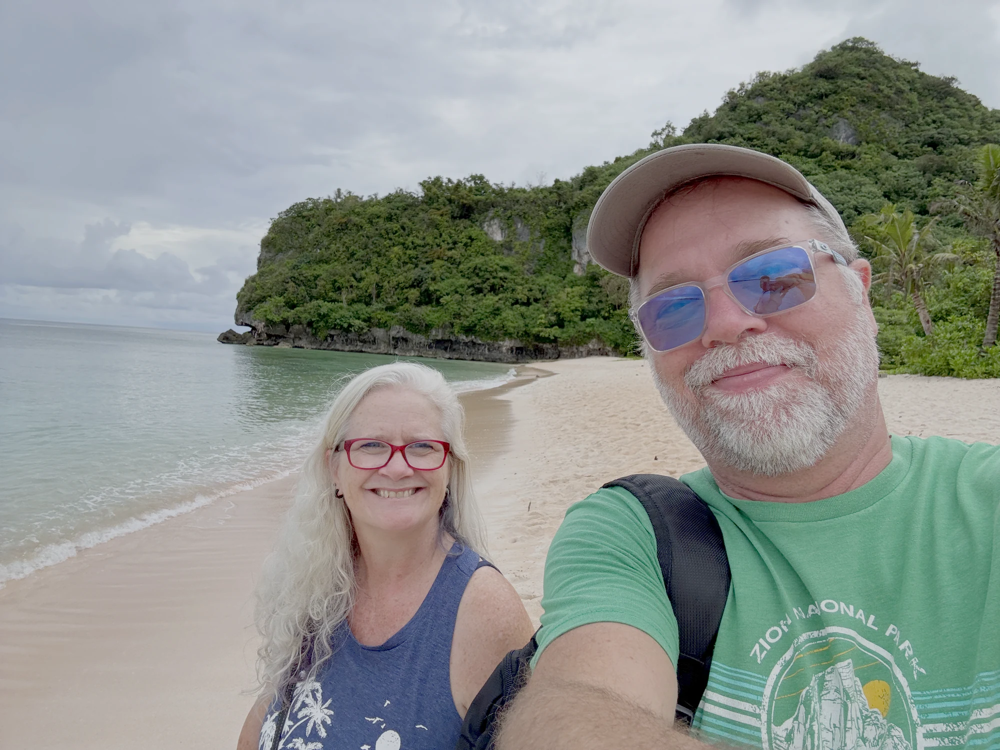

Everyday travel
Chase Sapphire Reserve®
Our primary travel card for flexible points, travel protections, airport lounge access, and dining.
- Priority Pass airport lounge access
- Flexible Ultimate Rewards points
- Travel and purchase protections
Slow travel freedom after 50
Sharing our journey into retirement, slow travel, and financial freedom.

Why Expatagogo?
Now we’re seeing how far retirement, slow travel, and smart financial choices can take us.
Every country.Every lesson.Every mistake.Shared honestly.
Watch the journey
Episode 1
The new 4K episode is finishing its upload now.
Open YouTubeHi, we’re Russ & Sherri
A year ago our lives looked very different. We had successful careers, comfortable routines, and a future that looked a lot like our past.
Then we retired, downsized, and began building a new life centered on freedom, slow travel, better healthcare options, and experiences instead of possessions.
We do not pretend to have every answer. We are figuring it out together—and sharing the real numbers, decisions, mistakes, and surprises along the way.
Say helloResources we personally use
We’re starting with the credit cards that are part of our own travel and business strategy. Over time, this section will grow to include hotels, insurance, eSIMs, camera gear, and other tools we actually use.
Our primary travel card for flexible points, travel protections, airport lounge access, and dining.
The hotel card behind much of our IHG strategy as we work toward more rewarding long stays.
A strong fit for eligible business and creator expenses while earning flexible Ultimate Rewards points.
Referral disclosure: These are referral links. We may receive a referral bonus if you are approved through one of them, at no additional cost to you. Offers and card terms can change, so review the issuer’s current details before applying. We only share cards that are part of our own travel or business strategy.
Follow from the beginning
Follow our journey from the very beginning. We’ll share what we are learning—not a constant stream of sales pitches.
What we are exploring
How to stay longer, spend smarter, and experience more.
The practical choices that helped make an earlier retirement possible.
What quality care really looks like outside the United States.
Hotels, routes, tools, costs, and lessons we can actually use.
The front door to everything ahead
The website will grow alongside the journey. For now, videos and the GoGo List are the best ways to follow along from the beginning.